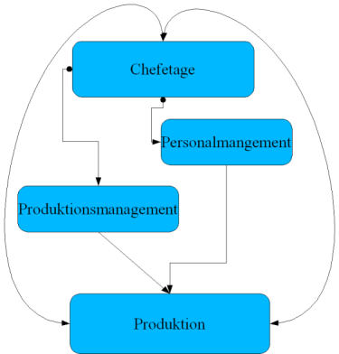

| [zurück] | [Hauptmenü] | [weiter] |
| [PDF] | ||
Erstellen eines Organigramms

Abbildung
1: Organigramm
Ein weiteres nützliches Werkzeug in
OpenOffice.org sind die Verbinder. Man kann
mit ihnen sehr gut Organigramme erstellen.
Öffnen Sie ein leeres Zeichnungs-Dokument.
Zeichnen Sie ein abgerundetes, gefülltes Rechteck.
Doppelklicken Sie in dieses Rechteck hinein, dann erscheint ein Textcursor im Objekt, und Sie können z.B.: „Chefetage“ hineinschreiben.
Darunter zeichnen Sie zwei Rechtecke und schreiben „Personalmanagement“, „Verkaufsmanagement“ und „Produktionsmanagement“ hinein.
Weitere Ebenen können beliebig hinzugefügt werden.
Jetzt klicken Sie auf Direktverbinder und bewegen den Mauszeiger auf das erste Rechteck. Das beginnt zu pulsieren und die Klebepunkte werden angezeigt. Von diesen acht Klebepunkten kann man jetzt eine Linie zum einem der Klebepunkte im nächsten Rechteck ziehen.
Wenn Sie über Umwege verbinden wollen, können Sie die anderen Verbinder benutzen, z.B: den Kurvenverbinder.
|
|
Um zusätzliche Klebepunkte hinzuzufügen, aktiviert man im Menü: Extras – Anpassen/Symbolleisten - Optionsleiste In der jetzt erscheinenden Leiste klickt man auf Klebepunkte bearbeiten und darauf erscheinen die Klebepunktefunktionen in der Funktionsleiste. Hier kann man auf Klebepunkt hinzufügen klicken. Damit fügt man ihn dann dort ein, wo man möchte. |
Erklärung der Verbinder:
„Chefetage“ - „Personalmanagement“ - „Produktion“: Verbinder.
„Produktionsmanagement“ - “Produktion“: Direktverbinder.
„Chefetage“ - “Produktion“: Kurvenverbinder .
„Produktion“ - „Chefetage“: Kurvenverbinder mit Pfeil.
„Chefetage“ - „Produktionsmanagement“: Verbinder.
Wenn die Verbinder an den Klebepunkten festgemacht sind, kann man die einzelnen Objekte immer noch verschieben und die Verbinder verlängern sich automatisch bzw. verkürzen sich.